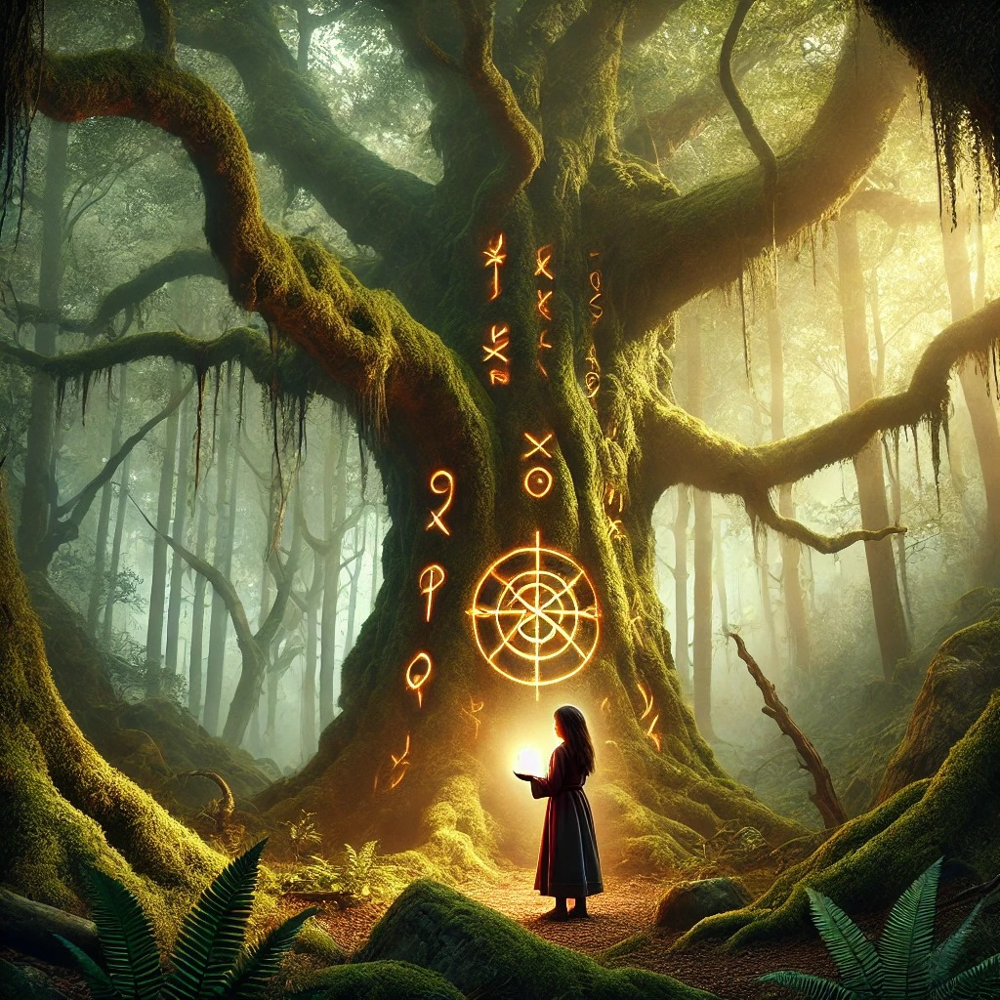

Deep within the heart of the Whispering Woods, a place shrouded in mist and mystery, lived a young girl named Elara. Unlike other children in her village, Elara was fearless. She had heard the stories—the warnings about the ancient forest where the trees seemed to talk and shadows moved on their own. But to Elara, the woods were a place of wonder, not fear. One crisp autumn morning, Elara decided to explore the uncharted parts of the forest, far beyond where anyone dared to go. As she wandered deeper, the trees grew taller, their branches twisted like ancient hands reaching for the sky. The air was filled with an eerie hum, like a song sung by the wind. Elara listened closely, and she realized it wasn't the wind at all—the trees were whispering. "Welcome, brave one," they seemed to say. Elara, her heart racing with a mixture of excitement and unease, continued onward. She stumbled upon a clearing bathed in soft, golden light. In the center stood a massive, ancient oak, its trunk adorned with symbols and runes that glowed faintly. Elara approached, her fingers grazing the rough bark. Suddenly, the whispers grew louder, urgent. "Find the heart, save the woods," the voices echoed. Elara noticed a small hollow at the base of the oak, and inside, a glowing stone pulsated like a heartbeat. She carefully removed it, feeling a surge of warmth spread through her. Instantly, the forest seemed to breathe easier; the mist lifted, and the oppressive shadows faded. With the heart in her hands, Elara knew the forest’s secret. She had been chosen as its guardian. From that day forward, the Whispering Woods were no longer a place of fear, but of magic and harmony, forever protected by the brave girl who dared to listen.
